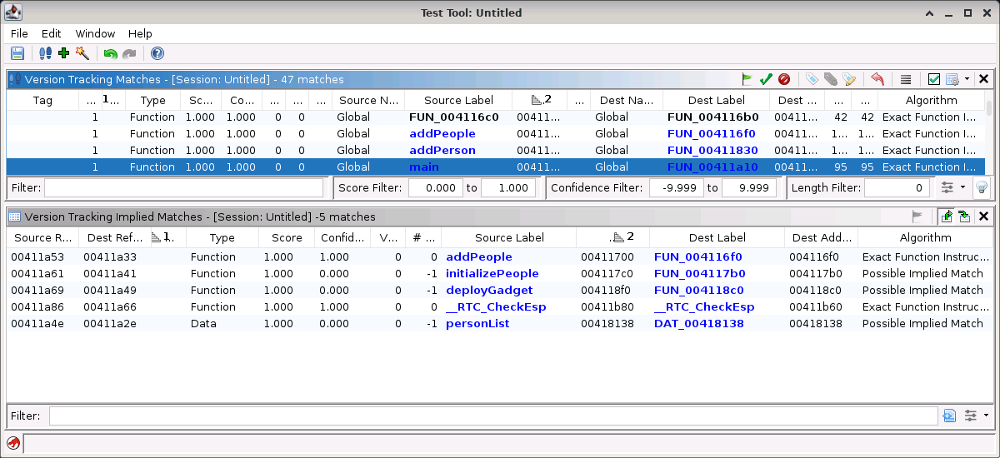

Version Tracking Implied Matches Table
The implied matches table displays of list of Implied Matches for the selected match in the Matches Table. The implied matches are generated by pairing up the outgoing references from the two functions in the selected match. Both function references (calls) and data references can generate implied matches. If there is already a match in the session that has the same association as the implied match, then an implied match is not created. Instead, it is indicated by incrementing the vote count for the current match. If no other match exists, and implied match is created it is listed as a "Possible Implied Match". For those implied matches that don't already have a corresponding existing match, the user can created new matches.
|  |
In the example shown above, the matches table has a match selected for a function named "_mainCRTSartup". The Implied Matches table shows a list of implied matches wherever references from "_mainCRTStartup" in the source program match a similar reference in the "_mainCRTStartup" function in the destination program. The idea is that if the selected match in the matches table is Accepted, then these other matches may also be "correct".
Version Tracking Implied Match
An implied match is simply a function or data match that is implied because of the correlation of references made by some other match.
Implied Match Table Columns
Column Name Description Source Reference Address Displays the address in the source program where the implied match is referenced. Destination Reference Address Displays the address in the destination program where the implied match is referenced. Status Displays the status of the association for this implied match. Type Displays the type of this implied match. Either Function or Data. Score The score of the best match with the same association as this implied match, or 0 if no matches exist with this association. Confidence The confidence score of the best match with the same association as this implied match, or 0 if no matches exist with this association. Multiple Source Labels? Icon indicating there is more than one label at the match's source address and a number indicating how many labels. The tooltip can be viewed to see the label names. Source Label Displays the label at the source address of the implied match. Source Address Displays the source address of the implied match. Multiple Dest Labels? Icon indicating there is more than one label at the match's destination address and a number indicating how many labels. The tooltip can be viewed to see the label names. Dest Label Displays the label at the destination address of the implied match. Dest Address Displays the destination address of the implied match. Algorithm Displays the algorithm of the best match with the same association as this implied match, otherwise, "Possible Implied Match" is displayed.
Implied Match Table Actions
Navigate References
When this action toggled on, selecting a row in the implied matches table will cause the sub-tools to navigate to the From Address of the references used to create the selected implied match.
Navigate Match
When this action toggled on, selecting a row in the implied matches table will cause the sub-tools to navigate to the source and destination addresses of the selected implied match.
The Accept Implied Match
action creates a match in the Matches Table if one does not already exist, and then sets its status as 'Accepted'. Note, the Implied Matches shown in the table are not saved unless this action is applied.
Text Filter
The text filter allows filtering on any text displayed in the table.